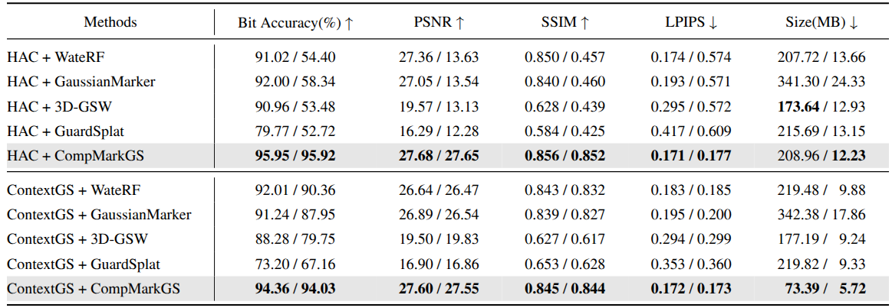

First, a learnable watermark embedding feature $f'$ is added to the anchor feature $f$ to create a watermarked anchor feature $f^{w}$.
This feature is processed by the quantization distortion layer to simulate quantization noise before being fed into MLPs to predict Gaussian attributes.
For watermark extraction, a pre-trained decoder retrieves the message from the low-frequency band of the rendered image.
For rendering quality, our frequency-aware anchor growing strategy selectively densifies anchors in high-frequency regions.
The entire framework is optimized using the total loss $\mathcal{L}_{total}$, incorporating HSV loss $\mathcal{L}_{hsv}$ and frequency loss $\mathcal{L}_{freq}$.
Abstract
As 3D Gaussian Splatting (3DGS) is increasingly adopted in various academic and commercial applications due to its high-quality and real-time rendering capabilities,
the need for copyright protection is growing. At the same time, its large model size requires efficient compression for storage and transmission.
However, compression techniques, especially quantization-based methods, degrade the integrity of existing 3DGS watermarking methods, thus creating the need for a novel methodology that is robust against compression.
To ensure reliable watermark detection under compression, we propose a compression-tolerant 3DGS watermarking method that preserves watermark integrity and rendering quality.
Our approach utilizes an anchor-based 3DGS, embedding the watermark into anchor attributes, particularly the anchor feature, to enhance security and rendering quality.
We also propose a quantization distortion layer that injects quantization noise during training, preserving the watermark after quantization-based compression.
Moreover, we employ a frequency-aware anchor growing strategy that enhances rendering quality by effectively identifying Gaussians in high-frequency regions,
and an HSV loss to mitigate color artifacts for further rendering quality improvement. Extensive experiments demonstrate that our proposed method preserves the watermark even under compression and maintains high rendering quality.
Qualitative Comparison
Blender - Lego
GT
Reference
ContextGS
Before CompressionAfter Compression
HAC
Before CompressionAfter Compression
Mip-NeRF 360 - Bicycle
GT
Reference
ContextGS
Before CompressionAfter Compression
HAC
Before CompressionAfter Compression
LLFF - Fern
GT
Reference
ContextGS
Before CompressionAfter Compression
HAC
Before CompressionAfter Compression
* Before/After clips are loaded from rendering_results/{scene}/ContextGS and rendering_results/{scene}/HAC.
Quantitative Results

Quantitative comparison of before (left) and after (right) compression bit accuracy and rendering quality. Evaluations are performed using a 48-bit setting, averaged over the Blender, LLFF, and Mip-NeRF 360 datasets. Baselines are tested within an anchor-based 3DGS framework with HAC and ContextGS compression. The best results are in bold.